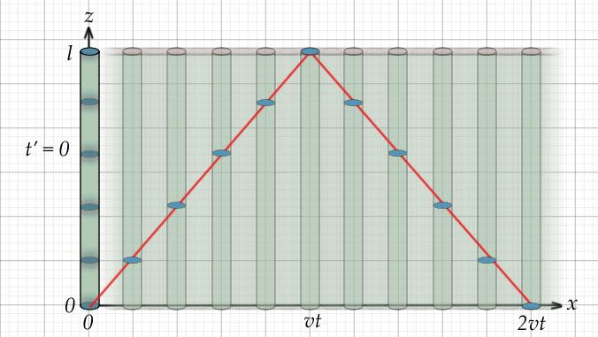
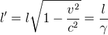

The phenomena of electrodynamics as well as of mechanics possess no properties corresponding to the idea of absolute rest... The same laws of electrodynamics and optics will be valid for all frames of reference for which the equations of mechanics hold good. We will raise this conjecture (the purport of which will hereafter be called the “Principle of Relativity”) to the status of a postulate, and also introduce another postulate, ... that light is always propagated in empty space with a definite velocity c which is independent of the state of motion of the emitting body... The introduction of a “luminiferous ether” will prove to be superfluous...
A. Einstein, 1905 (1)
The Lorentz factor describe how time and length scale as measured from two different frames of reference. There are a great many ways to derive the Lorentz factor, each with its particular focus or raison d'etre. For example, some (4) seek to differentiate Galilean from Lorentzian transforms. This derivation, similar to the derivation in Mead 2000 (2), is the simplest I was able to come up with, and easy to work through.
We imagine that we have a rod of length l, in which a signal propagates back and forth at the speed of light, c. Each transit to the other end takes t = l/c, and the round trip takes time t = 2l/c. Einstein compares this scenario to the ticking of a clock. In this experiment, we imagine a second identical rod moving along the x axis at some velocity v (shown blurred along x in the diagram). At t = t' = 0, a light pulse is emitted; the blue discs in the diagram indicate the position of the pulse sampled regularly in time, as it travels up and down the z axis on both rods.

Since one of the basic postulates of Relativity is that light always propagates with a definite velocity c, we can immediately see in the diagram that the pulse on the second rod appears to be moving slower than that of the first rod (as indicated by the length of the red line between the samples). As the pulse moves the distance l in the z direction, it travels the distance vt' in the x direction. The observer at the origin will see the pulse on the second rod after a lengthened period of time d indicated on the diagram by the red line extending from 0 to vt. By the Pythagorean theorem:
Equation 1
Since d = ct' (the length of the red line to vt in the diagram), and l = ct (the length of the rod), substitution into Equation 1 gives
Rearranging and solving for t1 yields
 Equation 2
Equation 2
Einstein's derivation in reference 1 is similar; he shows that if the rod is placed along the x axis, the length of the rod will appear shortened by the Lorentz factor according to the velocity of the observer.
 Equation 3
The next step is to show the derivation of the Lorentz transform, given the equation for the contraction of length, equation 3.
References:
1) Albert Einstein, On the Electrodynamics of Moving Bodies, Annalen der Physik, 17:891, 1905. The linked translation was prepared by John Walker.
2) Carver A. Mead, Collective Electrodynamics, Quantum Foundations of Electromagnetism, MIT Press, 2000, p.64
3) Bernhard Rothenstein, A faster than "World's fastest derivation of the Lorentz transformation".
4) relativitycalculator.com: The Heart of Special Relativity: Lorentz Transformation Equations (I wasn't able to determine the author's name).